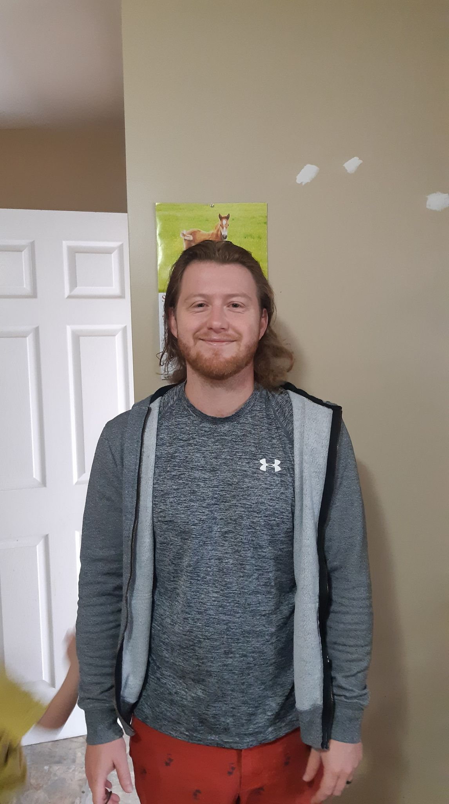

|
|
|

About me
My name is Erik Van Vliet. I am a 31 year old father of 6. I enjoy spending time with my family, golfing, online games with friends and growing a vegetable garden.
I have enrolled in this program in
hopes of building the knowledge and skills needed for a career in software development.
I have not decided, yet, which language I prefer, over the others. I do enjoy the creativity of web development, though.
I have already met a few classmates that seem like great people to know.
I am very happy with all my professors. While making my way through the handling of Covid learning has had some challenges, I think the college and professors have done well implementing all the learning online.
I am excited to advance through this course.
Student Life
As a full time student, life can get pretty hectic. I am currently studying Computer Programming and Analysis at St.Lawrence College. I am in my first year.
I find a couple of the very best ways to stay on top of my work load, is to have my timetable readily available, as well as keeping good study tips in mind.
- Information
- Timetable
- Alternate Timetable
- Study Tips
|